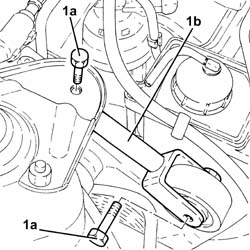
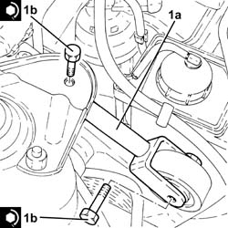
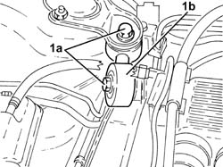
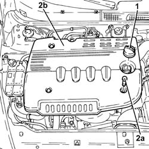
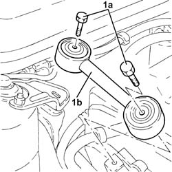
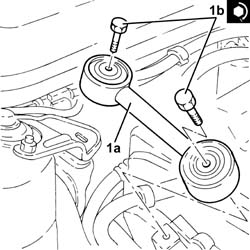

1008C10 POWER UNIT UPPER REACTION LINK R R
- Path
- Procedures > 10 ENGINE UNIT > 1008 POWER UNIT SUPPORTS > 1008C POWER UNIT REACTION ELEMENTS > 1008C10 POWER UNIT UPPER REACTION LINK R R
- Kind
- repair procedure (removal / refitting; the operation number is the code)
- Applies to
- all engines; all production periods
- Interactive page
- https://sloeber94.github.io/elrnDB-aGt/en/#/125000884
Applies to: engines: 2.0 JTS; all production periods
 Removing
Removing
 Refitting
RefittingProceed with removal
Op. 1016A40 IGNITION COIL COVER ON CYLINDER HEAD- R+R.
1. Undo the bolts (1a) and remove the power unit upper reaction rod (1b).

Applies to: engines: 2.0 JTS; all production periods
Refitting
Removing1. Place the power unit upper reaction rod (1a) back in its housing and fix it tightening the bolts (1b) to the recommended torque.
 | Fastening | Component | Ø | Value (daNm) |
|---|---|---|---|---|
1b | Bolt | REACTION ROD | M10 | 4.5 ÷ 5.5 |

Applies to: engines: 2.0 JTS; all production periods
Proceed with refitting
Applies to: engines: 3.2 V6; all production periods
Removing
Refitting1. Undo the bolts (1a) and remove the power unit reaction rod (1b).

Applies to: engines: 3.2 V6; all production periods
Refitting
RemovingPlace the power unit reaction rod (1a) back in its housing and fix it tightening the bolts to the recommended torque.
| Fastening | Component | Ø | Value (daNm) |
|---|---|---|---|---|
- | Bolt | REACTION ROD | M10 | 4.5 ÷ 5.5 |
Applies to: engines: 1.9 JTD 16V; all production periods
Removing
Refitting1. Remove the engine oil filler cap.
2. Undo the fixing bolts (2a) and remove soundproofing cover (2b).
Tighten the engine oil filler cap.

Applies to: engines: 1.9 JTD 16V; all production periods
1. Undo the bolts (1a) and remove the power unit reaction rod (1b).

Applies to: engines: 1.9 JTD 16V; all production periods
Refitting
Removing1. Place the power unit reaction rod (1a) back in its housing and fix it tightening the bolts (1b) to the recommended torque.
| Fastening | Component | Ø | Value (daNm) |
|---|---|---|---|---|
1b | Bolt | REACTION ROD | M10 | 4.5 ÷ 5.5 |

Applies to: engines: 1.9 JTD 16V; all production periods
Remove the engine oil filler cap.
Place the soundproof cover back in its housing and secure using the relevant bolts.
Tighten the engine oil filler cap.
Applies to: engines: 1.8 T.SPARK; all production periods
Removing
Refitting1. Release the fuel vapour recirculation pipe from the fastening on the power assisted steering fluid reservoir.
2. Undo the bolts (2a) and (2b) and remove the power unit reaction rod (2c).

Applies to: engines: 1.8 T.SPARK; all production periods
Refitting
RemovingPlace the power unit reaction rod back in its housing and secure it by tightening the bolts to the recommended torque.
Fastening | Component | Ø | Value (daNm) | |
|---|---|---|---|---|
- | Bolt | REACTION ROD | M10 | (Bracket on engine/bracket on bodyshell side) 4.5 ÷ 5.5 |
Fastening | Component | Ø | Value (daNm) | |
|---|---|---|---|---|
- | Bolt | REACTION ROD | M10 | (Bracket on engine/bracket on bodyshell side) 4.5 ÷ 5.5 |
Fix the fuel vapour recirculation pipe with the band on the power steering fluid reservoir.
Topics linked from this page (1)
Topics that link to this page (34)
- 1004B10 POWER UNIT WITH MANUAL GEARBOX - R + R
- 1004B24 POWER UNIT WITH MANUAL GEARBOX WITH HYDRAULIC SELECTION - R R
- 1008C14 ENGINE LINK BRACKET - R R
- 1008C16 BODY LINK BRACKET - R R
- 1008C18 LINK MOUNT ON ENGINE - R R
- 1016C10 SINGLE CYLINDER HEAD, REMOVED - OVERHAUL
- 1020D14 FRONT CRANK SHAFT OIL SEAL COVER - R + R AND REPLACE SEALS FOR VERSIONS WITH OIL PUMP ON CRANK SHAFT, TIMING SIDE
- 1020D18 FRONT CRANK SHAFT COVER OIL SEAL - REPLACE
- 1028H10 PISTON WITH CONNECTING ROD - R R
- 1032B10 TOOTHED TIMING BELT - R + R FOR TIMING ADJUSTMENT OR REPLACEMENT
- 1032B46 TOOTHED DRIVE PULLEY - R + R
- 1032B52 TOOTHED DRIVEN PULLEY (ONE) - R + R
- 1032C18 MOBILE TIMING SYSTEM TENSIONER - R + R FOR 24 VALVE ENGINES
- 1032C32 FIXED TIMING SYSTEM TENSIONER (ONE) R + R
- 1032D12 TIMING SYSTEM PROTECTIVE COVER(S) - R + R
- 1036L10 CAMSHAFTS IN CYLINDER HEAD EXTENSION - R R - INCLUDES CYLINDER HEAD EXTENSION REPLACEMENT IF NECESSARY
- 1036L30 FRONT OIL SEAL OF INTAKE CAMSHAFT IN CYLINDER HEAD EXTENSION REPLACE
- 1060E10 PRESSURE PUMP - R R
- 1060E30 PRESSURE PUMP PULLEY - R R
- 1060E40 SUPPLEMENTARY PRESSURE PUMP - R R
- 1060G90 DIESEL INJECTION WIRING HARNESS - R R
- 1072B10 INLET MANIFOLD - R + R AND REPLACE SEAL
- 1072D22 AIR FLOW SWITCH CONTROL ACTUATOR R R
- 1076A72 HEAT SHIELD FOR RIGHT CATALYTIC PRECONVERTER R R
- 1080B39 RIGHT CATALYTIC PRECONVERTER R R OR REPLACE CYLINDER HEAD GASKET
- 1080B93 RIGHT UPPER LAMBDA SENSOR R R
- 1080E60 PIPE FROM FUEL VAPOUR SEPARATOR TO ACTIVATED CARBON FILTER - R R
- 1088C10 WATER PUMP - R + R
- 1088D24 RIGID PIPE FOR COOLANT INLET TO WATER PUMP - R + R
- 4130B32 POWER STEERING PUMP MOUNT - R R
- 4130B54 RETURN PIPE FROM HEAT EXCHANGER PIPE TO POWER STEERING FLUID RESEVIOR R R
- 5505C28 INTERGRATED ENGINE BAY AND ABS SYSTEM WIRING - R R
- 5510C46 FLYWHEEL SIDE KNOCK SENSOR - R+R
- 5510C48 TIMING SIDE KNOCK SENSOR - R+R